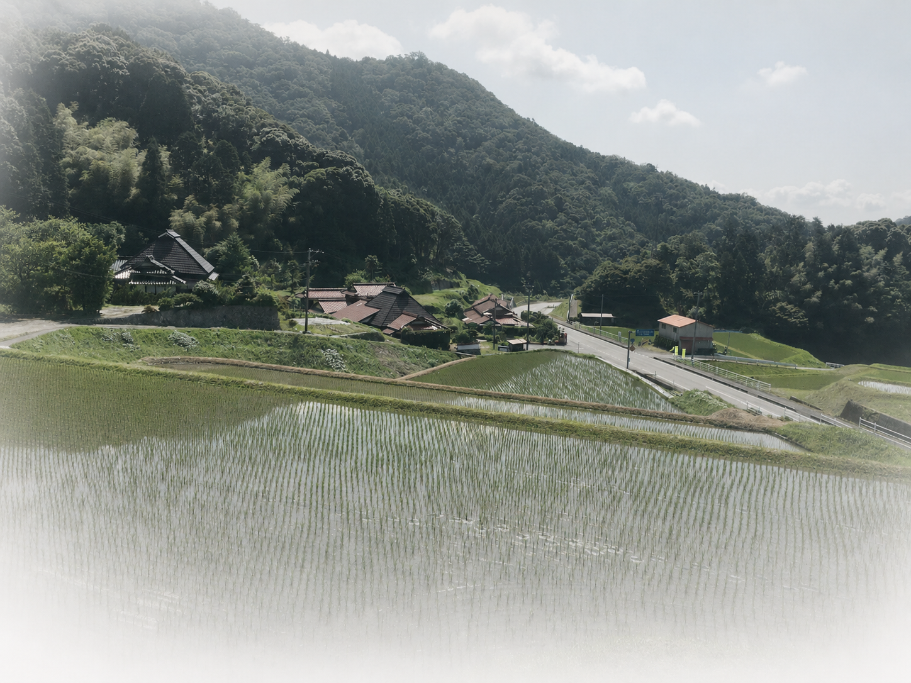

01
FOR FOREST OWNERS
さとやま不動産
森林・里山を所有する方、相続を予定する方のための相談窓口です。相続、管理、境界、今後の活用について、状況と選択肢を整理することから是非ご支援させてください。
相談について見る →NATURE CAPITAL & REAL ESTATE
金融資本を、ただ消費するための資金ではなく、森を手入れし、地域に新しい価値（自然資本）を育てる仕組みへ。
森林・里山の相続と管理森林の計画づくりを支援
二つの事業を見る →事業コンセプト
里山は、手入れする人、時間、そして資金があって初めて、その価値を未来へつなげられます。 もちろん、フィジカルAIの台頭により今後はより省人化されていく未来がありますが、森林・里山の価値を未来につなげるためには、やはり人の手が必要です。 私たちは、金融資本を、短期的に土地を評価するためだけに使うのではなく、森林・地域・そこで暮らす人の新しい価値を生み出すための資本として活かしたいと考えています。
そのために、所有者の不安に寄り添う「さとやま不動産」と、現場の計画づくりを支える仕組みの両方に取り組みます。

SERVICES
個人・企業の森林所有者・相続予定者への相談支援と、森林組合などの現場を支える仕組みづくり。
異なる立場に向き合う、二つの事業を展開します。
01
FOR FOREST OWNERS
森林・里山を所有する方、相続を予定する方のための相談窓口です。相続、管理、境界、今後の活用について、状況と選択肢を整理することから是非ご支援させてください。
相談について見る →02
FOR FORESTRY ORGANIZATIONS
森林経営計画作成に必要な情報を構造化するオープンソースの支援ツールです。森林組合・林業事業体など、現場の計画づくりを支えるサービスとして提供を予定しています。
提供準備中CONCERNS
FIRST INTERVIEW
初回のインタビューは無料です。売却を前提にせず、分かること・分からないことを一緒に確認し、次に必要な対応を考えます。
現地確認、調査、専門家への相談などが必要な場合は、対応可否と費用を相談の上ご案内します。
FLOW
対面・電話・オンラインで、今の状況とご希望をお聞きします。
所在地や登記、図面、写真など、分かる範囲から一緒に整理します。
現地確認や専門家への相談が必要か、対応の可否を検討します。
必要な対応と費用を個別にお伝えします。
OUR APPROACH
売却ありきにしないこと
権利と管理の状況から確認すること
地域で実際に手入れできる人の存在を重視すること
地域に仕事が残る形を目指すこと
整った森林・里山が、地域の暮らしや将来の活動につながっていく。その可能性を、無理のない順序で考えます。
FAQ
はい。分かる範囲の地名、登記資料、古い図面や写真などをもとに、最初に状況をうかがいます。
はい。相続前の段階から、確認しておくことや今後の選択肢を整理するためのご相談を承ります。
売却を前提としたサービスではありません。状況を確認したうえで、保有・管理・売却を含めた選択肢を検討します。
初回インタビューを無料とさせていただきます。現地確認や調査が必要な場合は、対応可否と費用を事前にご案内します。
CONTACT
ご相談窓口は現在準備中です。公開時に、電話・フォーム・受付時間をこちらにご案内します。
お問い合わせ準備中